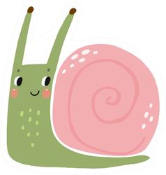

Bem-vindo a apostila que mudará a maneira como você pensa sobre cada site que você já visitou.
Passamos muito do nosso tempo online, navegando de um site para outro. Mas de onde vêm todos esses sites? Quem os está fazendo?
Você já se perguntou se você poderia fazê-los também? Bem,
VOCÊ PODE!
Tendo muita experiência em codificação ou nenhuma, você pode aprender a usar ferramentas digitais para se expressar.
Pense em como você aprendeu sua língua nativa. Você se lembra de ter feito algum tipo de esforço consciente para estudá-lo?
Provavelmente não ... então, como você aprendeu?
Provavelmente, você estava cercado por "materiais" em seu idioma - sua família o falava perto de você,
talvez você tenha assistido TV ou ouvido música nela. Você aprendeu naturalmente, simplesmente por estar imerso
em um ambiente rico em materiais para exploração e interação.
Esta apostila vai mostrar como, mesmo sem perceber, você já está imerso na "linguagem" dos sites. Tudo que você precisa fazer é olhar com atenção! Vamos
prepare-se para se aventurar no Mundo Selvagem dos Sites.
Antes de partirmos, vamos avaliar o que já sabemos:
Como você descreveria sites para alguém que nunca ouviu falar deles?
E se eles perguntassem como os sites são feitos, o que você diria?
Ferramenta de Trabalho
Para dar uma boa olhada em um site, precisamos ir além do que vemos com
apenas nossos olhos. Precisamos dar uma olhada mais de perto no que está por baixo;
o código.
Nossa principal ferramenta será o
Inspetor da Web .
Clique com o botão direito ☛ AQUI e selecione "Inspecionar".
Consegui abrir o Inspetor da Web!
Você deve ver algo mais ou menos assim:
Como posso usar o Inspetor da Web e manter minha página na largura total?
Para manter a página que você está inspecionando em largura total, você também pode puxar o Inspetor da Web em seu
própria janela. Procure o menu de três pontos no canto superior direito e selecione a opção Dock Side que
parece duas janelas.
Como você se sente olhando para o Inspetor da Web? Principalmente se você se sentir sobrecarregado, pode ser útil reunir aqui suas idéias.
Passe alguns minutos percorrendo o código HTML na aba Elementos .
O que você vê? Você vê algum texto desta apostila?
Aqui está um vídeo que demonstra
algumas dicas úteis para navegar com o Inspetor da Web. Saber como recolher/não recolher os elementos HTML
é especialmente importante!
Escreva sobre algumas das coisas que você vê por meio do Inspetor da Web.
O que acontece se você clicar duas vezes no conteúdo no Inspetor da Web? Você deve ser capaz de editar ou substituir totalmente essa parte do conteúdo!
Atividade nº 1: Edição de Conteúdo
Vamos tentar alterar o conteúdo por meio do Inspetor da Web. Lembre-se de que você pode fazer isso clicando duas vezes.
Tente clicar em "Inspecionar" novamente e editar aqui:
Minha refeição perfeita:
???????
:::::::
^^^^^^^
Você pode alterar o conteúdo em quase qualquer site, sem a necessidade de Photoshop! Por exemplo, um tweet:
Ou uma manchete:
Seja criativo! Explore a internet e torne-a sua.
Consegui alterar parte do conteúdo de uma página da web!
Explorando a Estrutura: HTML
HTML significa linguagem de marcação de hipertexto . Historicamente, as linguagens de marcação foram usadas
para anotar conteúdo de texto (por exemplo, um manuscrito) para que o compositor saiba como as diferentes partes do
texto devem aparentar depois de impresso. Por exemplo, a linguagem de marcação pode mostrar a parte do texto que
deve estar em negrito, em itálico, em uma fonte diferente, ser um cabeçalho de seção e assim por diante.
De volta ao Inspetor da Web, encontre os elementos que se parecem com:
<h1>
<p>
<strong>
Elas são chamadas de tags !
Assim como uma marcação de manuscrito tem símbolos que comunicam ao compositor o propósito de uma
parte do conteúdo e como ela deve ficar depois de impresso, tags HTML são símbolos que informam ao seu navegador a finalidade de uma
parte do conteúdo.
Quando você passa o mouse sobre as marcas HTML, a seção correspondente nesta pasta de trabalho deve ser destacada.
As tags de HTML geralmente são aninhadas umas dentro das outras. Você pode expandir uma tag clicando na seta à sua esquerda.
Como você descreveria a relação entre uma tag HTML e o conteúdo dentro dela com suas próprias palavras?
Existem demais tipos de tags de HTML para cobrir aqui, mas você pode descobrir mais sobre todas elas na
Documentação de desenvolvedor da Mozilla .
Os Web Docs da Mozilla são uma ótima fonte de referência não apenas para HTML, mas para muitas outras tecnologias da web que você pode estar curioso, como CSS e JavaScript.
Vamos dar uma olhada em algumas tags de HTML comuns. Você pode ver o código HTML para cada tag na primeira coluna. Você também pode
encontre os trechos de código relevantes no Inspetor da Web.
HTML
Nome da tag
Renderização
<p></p>
parágrafo
Este é um parágrafo! É curto, mas ainda assim.
<h1></h1> <h2></h2> <h3></h3> ...
cabeçalho
Sou um h1!
Sou um h2!
Sou um h3!
<div></div>
divisão de conteúdo
Estou dentro de um div. O div não tem nenhum atributo visual, a menos que seja estilizado para ter alguns. Por exemplo, este tem uma borda e um fundo.
Vamos passar algum tempo mexendo nas tags do Web Inspector! Experimente estes para começar:
sou tão pequeno ... gostaria de ser grande e importante
QUERO SER APENAS UM PARÁGRAFO NORMAL
Minha imagem está quebrada! Você pode concertar isso?
As tags HTML podem ter atributos. Por exemplo, src é um atributo da tag & lt; img> .
Os atributos podem ser adicionados ou excluídos por meio do Inspetor da Web. Tente remover o atributo desativado do botão abaixo.
Também é possível usar o Inspetor da Web para excluir totalmente as tags.
Excluir HTML pode ser útil em muitas situações, como ultrapassar acessos pagos.
Você pode praticar a exclusão de elementos corrigindo a frase abaixo.Leia sobre a tag <br>.
me bo
te de
volta
po
r fa
vo
r
O que você pode tentar mudar na internet?
Consegui editar algumas tags HTML!
Qual (is) site (s) tentou editar?
O que você mudou?
Adicione uma imagem de sua edição aqui:
Como posso obter um link para minha captura de tela?
Primeiro você precisa fazer o upload da sua captura de tela para um serviço de hospedagem. ImgBB é uma opção gratuita.
Em seguida, você precisa obter o URL da imagem. Você pode clicar com o botão direito na imagem e procurar algo como "Copiar endereço da imagem". Você também pode arrastar
a imagem para a barra de URL do seu navegador e copie o que aparece lá.
Cole seu url no atributo src da tag <img/>.
Explorando o Estilo: CSS
Pense nos sites que você visita com frequência. Eles são parecidos? Como as mesmas tags HTML podem parecer tão diferentes em sites diferentes?
Como isso pode ser um <h2>
E isso tambem ser um<h2>
Mas eles parecem totalmente diferentes? Vamos ﾟ･✧･ﾟINSPECIONARﾟ･✧･ﾟ
A chave está no atributo "style" na tag <h2> . No atributo de estilo, você pode escrever CSS.
CSS significa Cascading Style Sheets e é a linguagem que podemos usar para definir melhor a aparência dos elementos em uma página da web.
É mais fácil ver o estilo de um elemento se você olhar para a aba de Estilos perto da parte inferior.
Você pode fazer vários estilos diretamente na aba de Estilos de um elemento. Você pode editar uma de suas propriedades, excluir uma ou adicionar uma nova propriedade inteira.
Atividade nº 3: Editando CSS
Aqui está uma lista de cores nomeadas em CSS. Mude esta linha para qualquer cor que você quiser!
Você também pode adicionar ou alterar uma cor de fundo para os elementos. Qual é a tua cor preferida?
Você pode criar muito interesse visual com apenas uma borda e um plano de fundo. Consulte a documentação do Mozilla para saber mais sobre todas as possibilidades para bordas e fundos e seja criativo aqui!
Eu tenho uma borda, um contorno e uma sombra de caixa. Legal, não?? Confira meus estilos no inspetor! O que parece divertido de mudar?
Você pode estilizar muitas coisas com CSS, incluindo o cursor. Passe o mouse sobre mim para ver! Você pode alterar este cursor para um diferente?
CSS também é usado para propriedades mais estruturais, como a exibição ou não de um elemento. Tente usar a guia Estilos para alternar a visibilidade das folhas, talvez você encontre algo legal!

Mesmo as pessoas que já programam para a web há anos não conhecem todas as propriedades CSS possíveis. Em caso de dúvida, você sempre pode consultar este
lista das propriedades CSS mais comuns ou
a referência estendida. Quando você se depara com uma
propriedade desconhecida, você pode pesquisá-la no MDN para saber mais.
Consegui mudar alguns estilos CSS!
Continue explorando!
A web é realmente um lugar selvagem e continuamente expansivo. Mas isso não significa que você precisa de anos de treinamento ou um diploma em Ciência da Computação para interagir com ele de forma pessoal.
Por meio desta apostila, você aprendeu a usar o Inspetor da Web para examinar mais de perto alguns dos materiais que constituem a web: HTML e CSS. Mais do que apenas olhar, você
alcançou o funcionamento interno e tornou esta página sua!
Você pode baixar esta página com todas as suas maravilhosas adições clicando em aqui!
Se desejar criar um novo site com SUA versão desta apostila, você pode usar Netlify para implantá-lo. Tudo que você precisa fazer é
colocar seu arquivo dentro de uma pasta e arrastea-lo para a página no link acima.
Aqui está um retorno a onde começamos. Pegando o que você aprendeu,
Como você descreveria para alguém como os sites são feitos?
Como você se sente sobre sua capacidade de fazer um site agora?
Há muito mais para descobrir sobre a web e como ela é feita, e ainda mais maneiras de se expressar por meio dela.
No espírito de uma internet mais estranha, mais livre e criada por você, aqui estão alguns links para você começar:
Se você quiser saber mais sobre a vibe da web nos anos 90 enquanto pratica HTML e CSS, dê uma olhada no livro de Jackie Liu
Construir um mini site em construção zine.
Se você quer apenas fazer um site e não está sentindo as partes HTML e CSS, não tenha medo! Experimente a interface de arrastar e soltar da mmm.page. A expressão na web é para todos!
Se você está intrigado com CSS e quer se sentir muito mais confiante com ele, recomendo fortemente o Claro que sim! CSS! zine de Julia Evan
Se você estiver interessado em fazer um blog enquanto trabalha em HTML e CSS, Zonelets de Marina Kittaka é um ótimo lugar para ir.
Se tudo o que você deseja é um lugar para compartilhar suas ideias rápidas, você gostaria de thoughts.page criado por Wesley Aptekar-Cassels.
Se um curso inteiro sobre como fazer gráficos para a web parece muito, mas você quer mergulhar de cabeça, vá para Café Robot e tente suas experiências rápidas de codificação.
Obrigado por dedicar seu tempo ao meu pequeno projeto! Se você tiver um minuto, adoraria ouvir de você. Você pode compartilhar suas ideias por meio deste formulário super curto.


 As tags de HTML geralmente são aninhadas umas dentro das outras. Você pode expandir uma tag clicando na seta à sua esquerda.
As tags de HTML geralmente são aninhadas umas dentro das outras. Você pode expandir uma tag clicando na seta à sua esquerda.